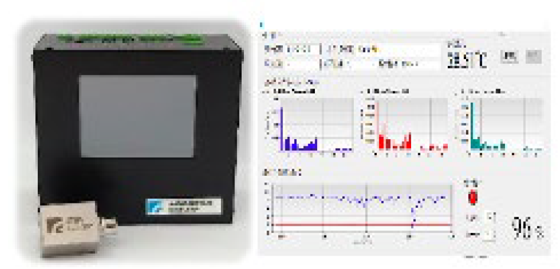

| 全數位振動感測解決方案 Fully Digital Vibration Sensing Solution |
| 工研院開發之振動感測器，具高頻寬、低雜訊、與數位輸出特 點，其藉由振動感測器於馬達/泵浦之架設與即時資料擷取，以 時域與頻域特徵分析找出反應馬達/泵浦異常之關鍵參數及故 障相關之特徵頻率，並配合工作站端之 GUI 使用者介面，進 行各警示閥值設定、即時運算比對、以及數位化資訊之儲存與 顯示。 The ITRI vibration sensor have various features including high bandwidth、low noise、 and digital output. The key parameters reflecting the abnormality and fault of the motor/pump could be found out by analyzing the characteristics in the time domain and the frequency domain vibration signal acquitted by the vibration sensor installed on the motor/pump. In addition, the useful function such as alarm thresholds setting、real-time calculation/comparison、and storage/display of digital information could be achieved by the graphical user interface(GUI).  |
| 技術洽詢聯絡人：陳國彰 聯絡電話：06-3847136 E-mail：kerwin_c@itri.org.tw |